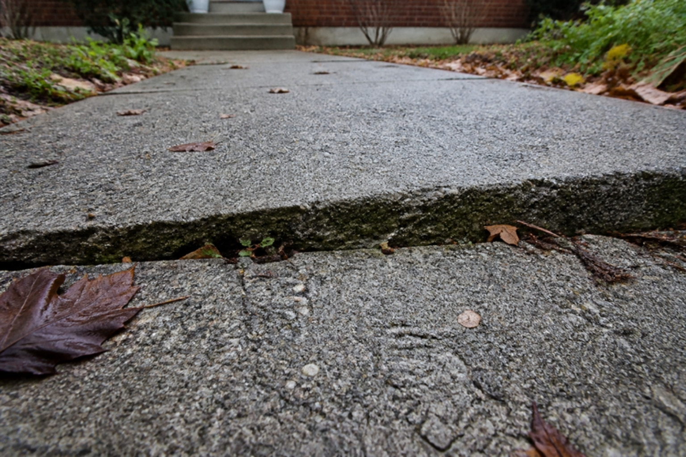
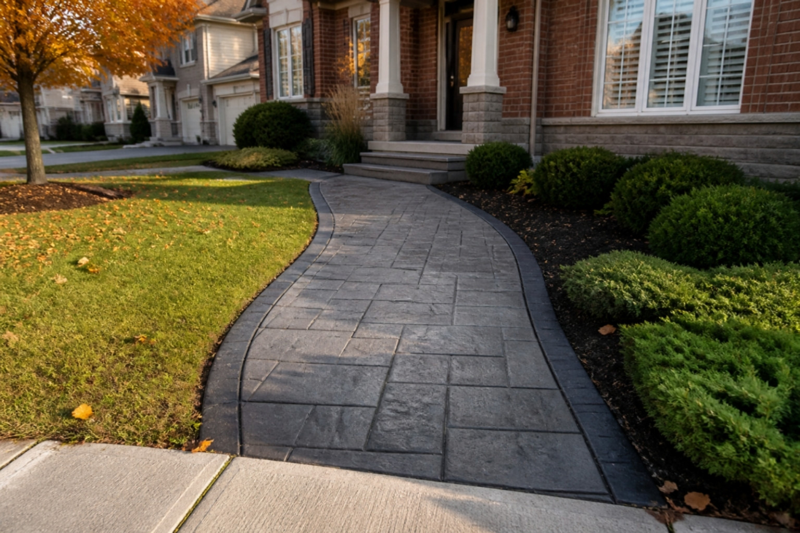
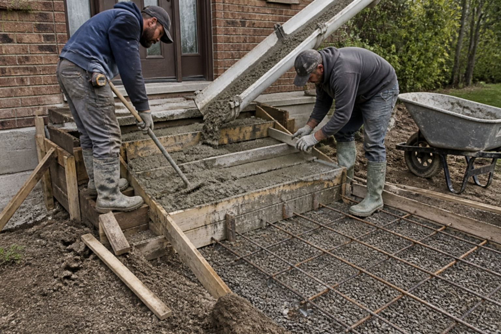

Every November the same photos land in our WhatsApp. A front step that has pulled an inch away from the house. A walkway with a slab tilted toward the foundation. A driveway with a crack you can fit a loonie into. The homeowner wants to know one thing: can this be saved, or does it have to come out?
Resurfacing is still the right call for the majority of GTA concrete, and it is still 40–60% cheaper than a tear-out. But a resurfacing overlay is a skin. It bonds to the slab underneath and moves with it. Put a beautiful finish over a slab that is still sinking and the new surface sinks with it. That is why we now pour new concrete too: stamped concrete, front steps and landings, walkways and driveways, across Toronto and the GTA. The goal is not to sell you a pour. It is to stop quoting a repair on a slab that does not deserve one.
Resurface or Re-Pour? The 60-Second Test
Walk out with a tape measure and a straightedge. What you are checking for is movement, not ugliness. Ugly is fixable. Movement is the deciding factor.
Resurface it if…
- Cracks are hairline and both sides sit at the same height.
- The surface is flaking, pitted or stained but what is under the flaking is solid and rings hard when you tap it.
- The slab is level and drains away from the house, even if the finish is tired, patched or painted.
- Steps are chipped at the nosings but the block itself is sitting tight to the house and does not rock.
Pour new if…
- One side of a crack is higher than the other. A step in the surface means the base underneath has washed out or heaved. An overlay will crack along the same line within a season.
- A section has settled toward the house and water pools against the foundation. Lifting or mudjacking is sometimes possible, but a slab that has dropped more than an inch or two is usually a re-pour.
- Front steps have separated from the house or lean forward. Frost has moved the whole block, which means it was poured on a base that was never deep enough or compacted properly.
- The concrete is crumbling through its full depth. Old, low-strength or non-air-entrained concrete can rot from the inside after decades of salt. If a screwdriver sinks in, there is nothing left to bond to.
- The slab is too thin. We still find 2–3 inch walkways and driveways in older Toronto neighbourhoods. They cannot carry a car and they will not hold an overlay.
The rule we quote by: resurfacing fixes a surface problem on a sound slab. A pour fixes a slab problem. Guess wrong and you pay for the job twice.

What Artisan Coat Pours
- Front steps and landings. Formed and poured in place with a proper footing and compacted base, tied to the existing structure where it makes sense, finished broom, stamped or ready for a decorative overlay once cured.
- Walkways and side paths. Four-inch slabs on a compacted granular base, sloped to drain, with control joints placed where the slab wants to crack anyway.
- Driveways and parking pads. Five-inch reinforced slabs for cars and SUVs, thicker at the apron and anywhere a truck will sit.
- Stamped and coloured concrete. Slate, flagstone, ashlar and wood-plank patterns pressed into fresh concrete with integral colour and a contrasting release, then sealed.
- Cut-outs and re-pours after plumbing work. Basement, garage and walkway slabs opened for a drain or sewer line and poured back flat and level. See our concrete cutting and backfill service.
Everything we have always done still stands: Jewelstone decorative resurfacing, crack and spall repair, sealing and microcement. The difference is that the person assessing your slab is now the same person who can pour it, so there is no incentive to push you toward one answer.
Poured Concrete Cost in Toronto (2026)
Poured concrete in the GTA is priced per square foot for flatwork and per project for steps. Labour, forming, base preparation and disposal of the old surface are where the money goes; the concrete itself is a small share of the bill. The ranges below are typical for Toronto and the surrounding region in 2026. Access, soil conditions and how much old concrete has to come out move a quote within these brackets.
| Project | New Pour, Installed (GTA, 2026) | Notes |
|---|---|---|
| Broom-finish flatwork, per sq ft | $12 – $20 | Walkways, pads, plain driveways |
| Exposed aggregate, per sq ft | $16 – $26 | Washed finish, good traction |
| Stamped concrete, per sq ft | $22 – $32 | Pattern, integral colour, release, sealer |
| Front steps + landing (3–5 risers) | $4,500 – $9,000 | Includes demolition of the old steps |
| Front walkway, approx. 120 sq ft | $2,400 – $4,200 | Add $600–$1,200 to remove the old one |
| Single-car driveway, approx. 400 sq ft | $6,000 – $9,500 | Add $1,500–$3,000 removal |
| Double driveway, approx. 600 sq ft | $8,500 – $13,500 | Add $2,000–$4,000 removal |
For the resurfacing side of the comparison, our 2026 resurfacing cost guide lays out porch, step, patio and driveway numbers. As a rule of thumb, resurfacing a sound slab costs 40–60% less than tearing it out and pouring new, and takes two to three days instead of a week plus curing time. That gap is exactly why we test the slab before we quote.
Be careful with a driveway quote that comes in well under $10 per square foot. Something is missing: usually the base depth, the reinforcement, the air-entrained mix or the removal and disposal of the old slab. Every one of those is invisible on the day you pay and very visible by the third winter.
Stamped Concrete: Poured vs Overlay
Stamped concrete is the finish most people picture when they think of a new patio or driveway, and it comes two ways. A stamped pour presses the pattern into fresh concrete on a brand-new slab. A stamped overlay applies a thin polymer-modified layer over an existing slab and stamps that. Both give you slate, flagstone or wood-plank looks with integral colour and a darker release in the joints.
The choice is the same test as above. A sound, level slab with a worn or plain surface is a candidate for a stamped overlay at a fraction of the cost. A slab that has moved gets a stamped pour, because the pattern will only ever be as flat as the concrete under it. Either way, plan on re-sealing stamped concrete every two to three years in the GTA. The sealer is what keeps colour from fading and salt from working into the pattern.

How a GTA Pour Is Built to Survive Winter (and Why Cheap Pours Fail by Year Three)
Concrete does not fail because it is concrete. It fails because of what was skipped underneath it and inside it. Southern Ontario puts a slab through dozens of freeze-thaw cycles a winter and a steady diet of de-icing salt, so the spec matters more here than almost anywhere in North America. This is what a pour that lasts actually involves.
- Dig to the right depth. The old slab and the soft soil under it come out. A walkway gets 4–6 inches of compacted granular base under a 4-inch slab; a driveway gets 6–8 inches of base under a 5-inch slab. Skipping the base is the single most common reason a new pour heaves.
- Compact in lifts. The granular base is placed in layers and plate-compacted each time. Base that is dumped and raked settles later, and the slab follows it down.
- Reinforce it. Steel mesh or rebar on chairs, so it sits in the middle of the slab rather than on the ground doing nothing. Reinforcement does not stop concrete from cracking; it stops a crack from opening up and stepping.
- Order the right mix. Exterior concrete in Ontario exposed to freeze-thaw and salt should be a 32 MPa, air-entrained mix with a low water-to-cement ratio. Air entrainment is a network of microscopic bubbles that gives freezing water somewhere to expand. Without it, concrete scales and spalls within a few winters no matter how good the finish looks. This is the line item cheap pours quietly drop.
- Slope it away from the house. About a quarter inch per foot. A slab that drains toward the foundation is a basement leak and an ice sheet waiting to happen.
- Cut control joints in the right places. Concrete shrinks as it cures and it will crack. Joints every 8–10 feet on a 4-inch slab, cut to a quarter of the thickness, tell it where to do that. Random cracking is almost always a joint layout problem.
- Cure it properly. Concrete reaches its strength by staying moist, not by drying out. We keep it covered or wet for the first week, keep foot traffic off for two to three days and cars off a driveway for at least seven.
- Seal it at 28 days, not on day two. A penetrating sealer after the concrete has cured fully, then again every two to three years.

No de-icing salt on new concrete for its first winter. The surface is still gaining strength and salt pulls moisture into it right when it is most vulnerable. Use sand for traction and shovel promptly. From the second winter on, a sealed slab handles salt the way it is supposed to.
Can You Pour Concrete in Winter in Toronto?
Technically yes. Practically, not for a home driveway or front steps. Concrete needs to be placed and cured above about 5°C. Below that, the water in the mix can freeze before the concrete gains strength, and the slab never reaches the number on the delivery ticket. Cold-weather pouring is possible with heated enclosures, insulated blankets and accelerating admixtures, but on a residential job the cost and the risk rarely make sense. In the GTA, we treat mid-to-late November as the end of the pouring season depending on the forecast, and April as the restart.
So what do you do in November with a slab that failed the 60-second test?
- Get it assessed now. We can measure settlement, probe the base and tell you whether it is a resurface or a pour before the snow hides everything.
- Lock in a spring slot. April and May pours book up through the winter. A deposit now puts you first in the queue when the ground thaws.
- Make it safe for the season. A heaved step or a tilted slab can be shimmed, patched or treated for traction so nobody falls on it in January. That is a small job, not a commitment.
- Watch it over the winter. This winter is a free diagnostic. Note where ice pools, whether the crack opens further and whether the step moves again after the first deep freeze. Send us the photos in March.
If your slab passed the test and it is only the surface that is tired, resurfacing has its own weather window, and in a mild fall it runs later than a pour. Our guide to the best time to resurface in the GTA covers that in detail.
Which One Is Right for You?
- Sound slab, ugly surface: resurface. Jewelstone, a stamped overlay or a plain broom-textured overlay, done in days, 40–60% less than a pour.
- Slab has moved, cracked through or crumbled: pour new, built to the spec above, then choose a broom, exposed aggregate or stamped finish.
- Steps pulled away from the house: almost always a re-pour with a proper footing. A cosmetic fix here is money down the drain.
- Thin or unreinforced driveway: pour new at five inches with mesh. There is no overlay that turns a three-inch slab into a driveway.
- Not sure: send a photo and a short video of you tapping the surface and stepping on the suspect section. We can usually tell from that.
Where We Work
Artisan Coat pours and resurfaces concrete steps, walkways, driveways, porches and patios across Toronto, Mississauga, Brampton, Vaughan, Oakville, Etobicoke, North York, Scarborough, Richmond Hill, Markham, Burlington, Milton, Caledon, Hamilton and the wider GTA. Assessment, prep, pour or overlay, finish and sealer are handled by one crew, backed by a written warranty.
The Short Version
Most GTA concrete should be resurfaced, not replaced. The exceptions are slabs that have moved: cracks with a height difference, settled sections, steps that have separated from the house, concrete that crumbles through its full depth, or slabs too thin to do their job. Those get a new pour. In Toronto in 2026, broom-finish flatwork runs $12–$20 per square foot, stamped concrete $22–$32, and a new set of front steps with a landing $4,500–$9,000 including demolition.
Whichever way it goes, the slab is only as good as the base under it and the mix inside it. Dig deep enough, compact it, reinforce it, order air-entrained 32 MPa, cut the joints, cure it, and keep the salt off for one winter. Get those right and the pour outlasts the mortgage.